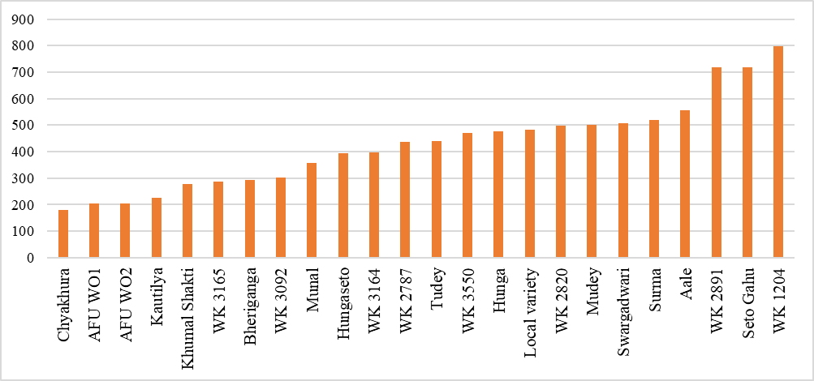
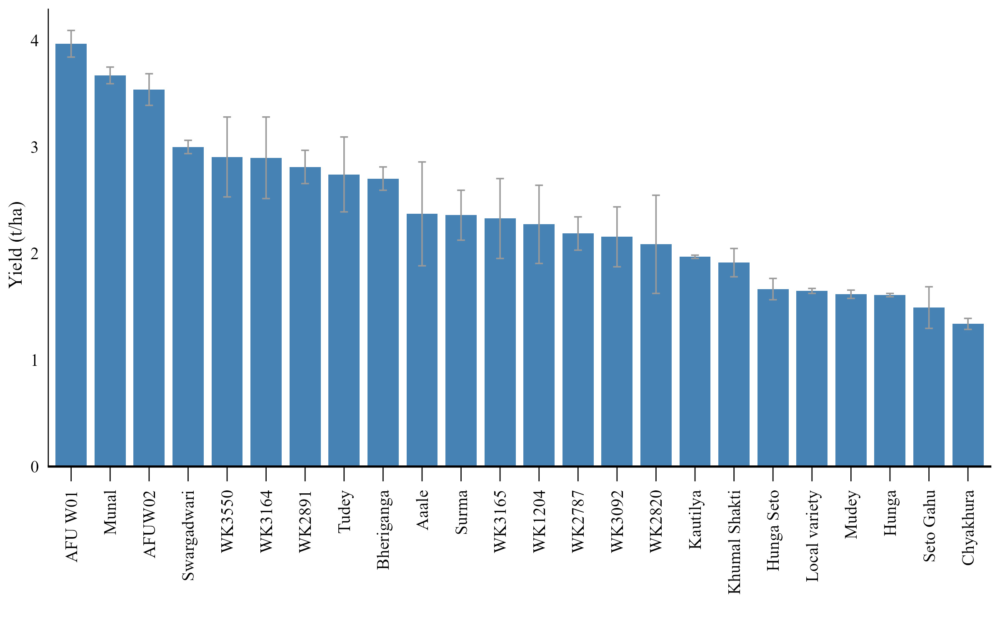
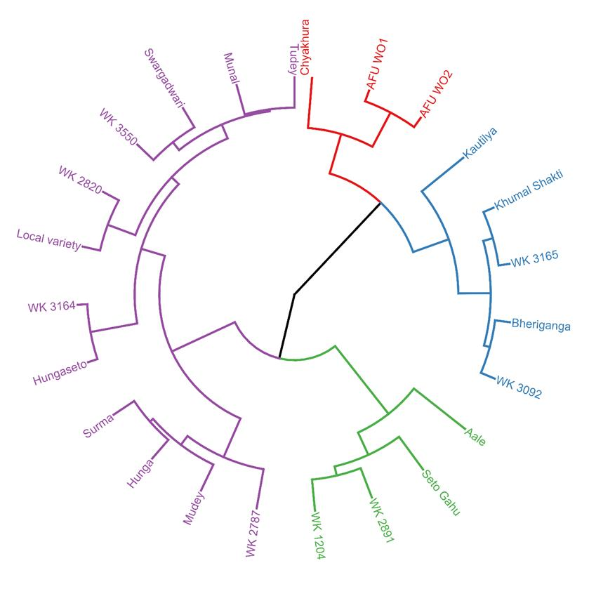
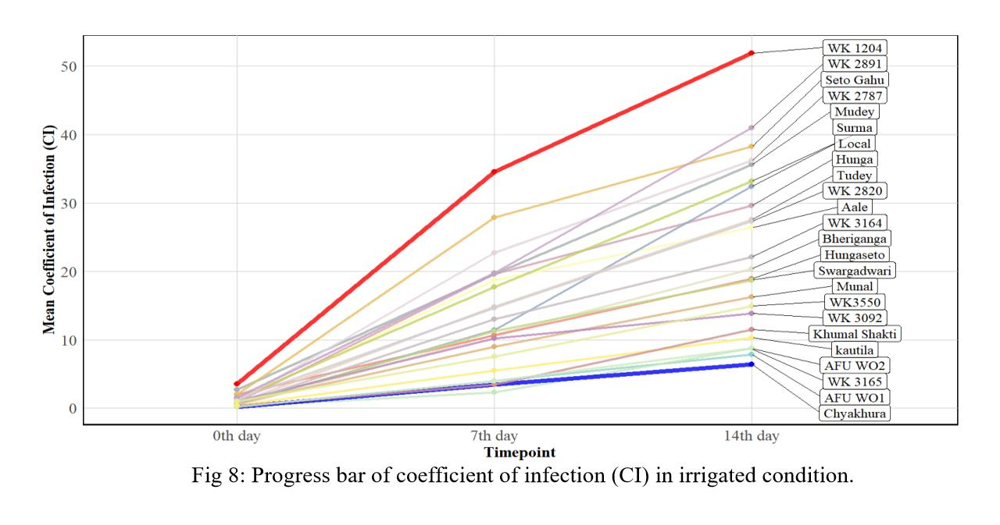
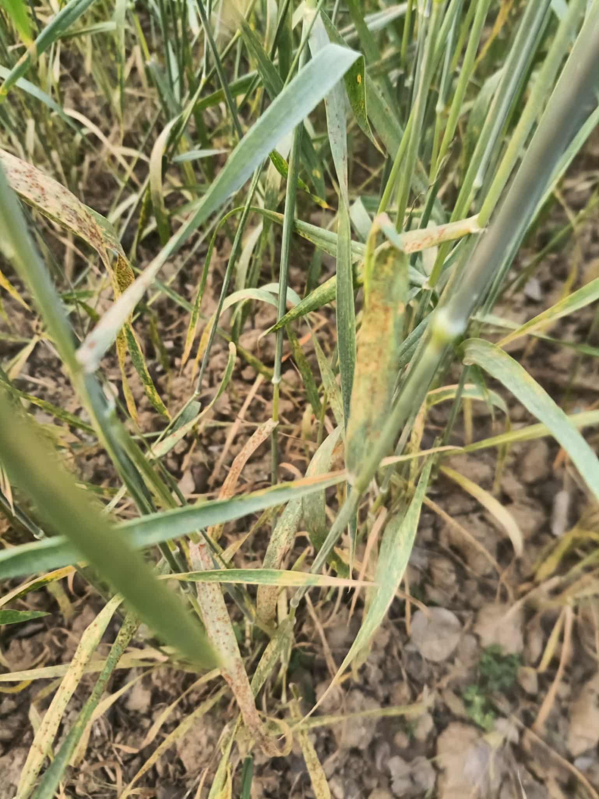
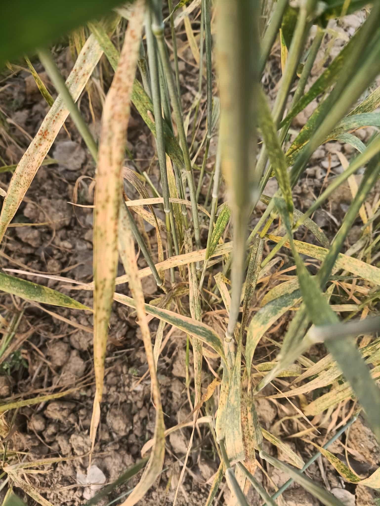

Background
Leaf rust caused by Puccinia triticina is a major constraint to wheat production worldwide and in Nepal's mid-hill region. Durable adult plant resistance (APR) is a key breeding objective. This study screened local and advanced genotypes under natural infection to identify lines showing low disease progress and acceptable grain yield.
Why this research and Grant?
During one of our field visits, we observed an intensive prevalence of leaf rust disease in wheat crops, significantly affecting yield and plant health. In response, a project grant of NRs. 3,00,000 (approximately €1,900) was funded by Champadevi Rural Municipality to identify leaf rust–resistant wheat genotypes. Since genetic resistance provides a more reliable and sustainable solution compared to repeated fungicide applications, the project focused on developing and screening resistant varieties to minimize fungicide dependency and promote sustainable agricultural practices.
Materials & Methods
Twenty-four genotypes were evaluated in an alpha lattice design with two replications. Disease was recorded at 7-day intervals on the Modified Cobb scale; AUDPC was calculated following Duveiller (1997). Infection types (O, R, MR, MR–MS, MS, S) were scored and used to compute the coefficient of infection. rAUDPC and rate of disease increase (r-value) were also estimated.
Results (Highlights)

AUDPC: WK1204 (797.48), Seto Gahu, and WK2891 were highly susceptible.

Grain yield: Yield performance of wheat genotypes under rust field

Resistance cluster: Resistant genotypes grouped closely in cluster analysis

CI values: Progess of coefficient of infection
Gallery — Research Highlights




Future recommendation
Validate resistance with molecular markers (QTL mapping / diagnostic Lr markers), perform multi-location trials in other rust-prone zones, and consider combining APR sources for durable resistance.